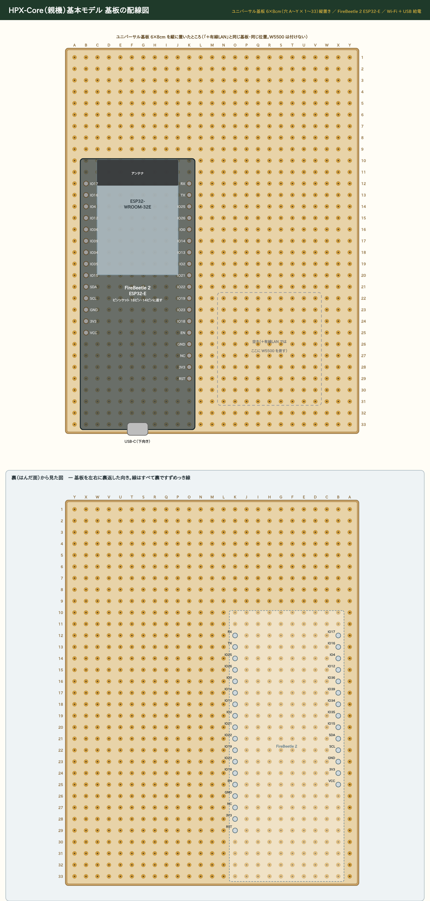
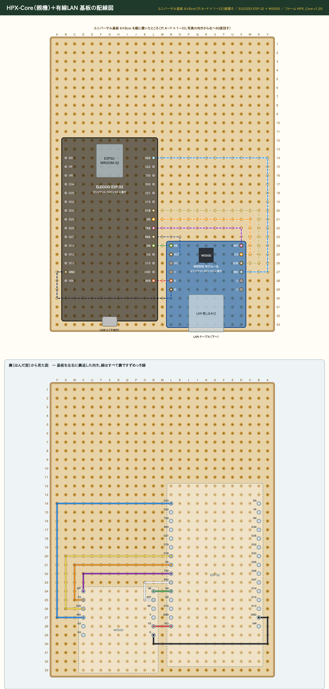
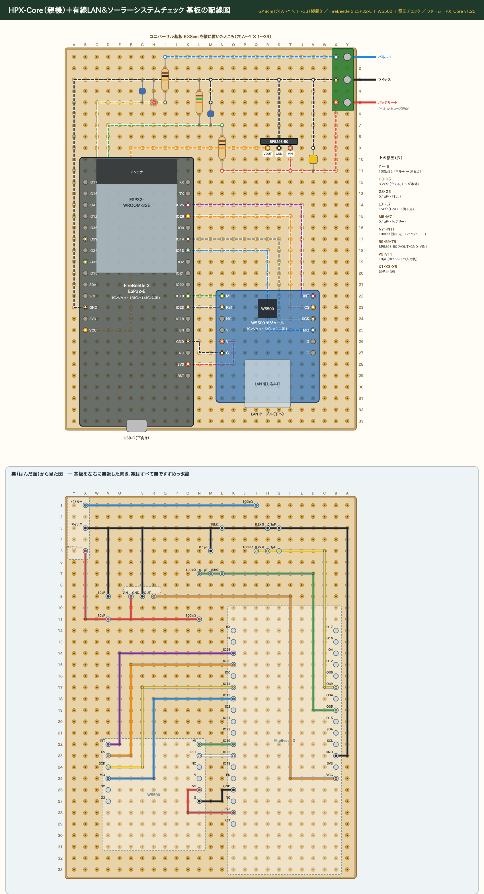
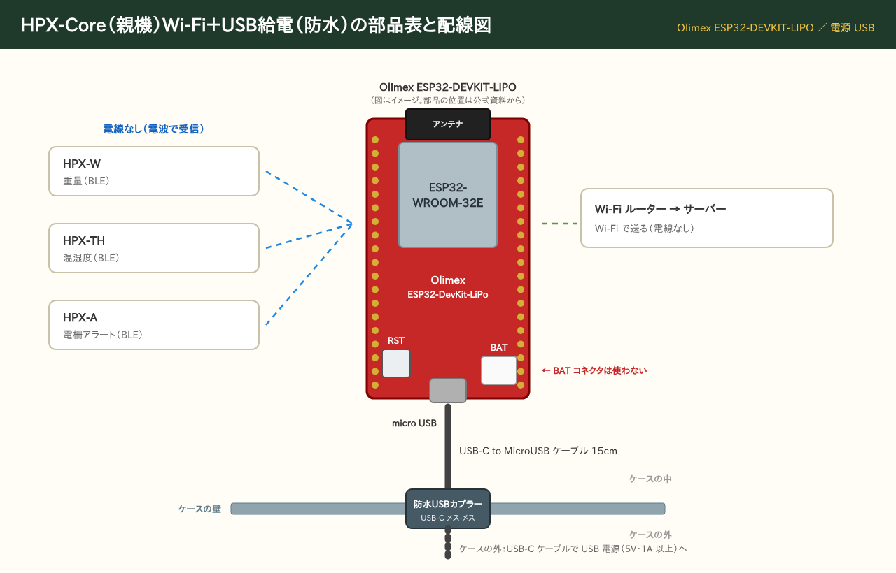
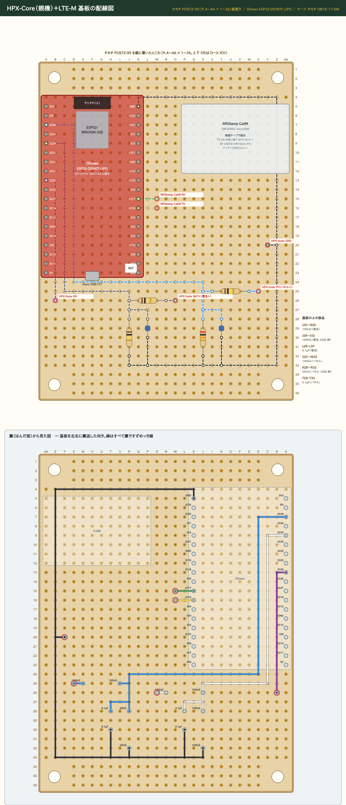
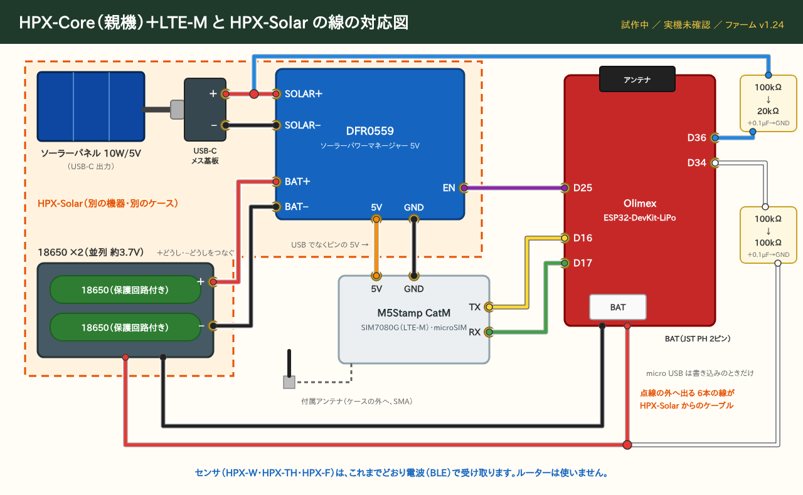

← 機器の一覧へ戻る
Devices
HPX-Core
センサの記録を Bluetooth で集め、Wi-Fi・有線LAN・LTE のどれかでサーバーへ送る中心的な機器です。
基本モデルは、ルーターへの接続をWi-Fiで行い、USBケーブルで電力を供給します。さらに、有線LANでの接続、ソーラーシステムの電圧計測、防水機能、単三リチウム電池駆動、LTE での直接送信（ルーター不要）などのオプション実装が可能です。LTE-M の版の電源は、別の機器「HPX-Solar」（小型ソーラー電源）を使います。
どれを作ればいい？
電源と通信方法を選ぶと、作る版が分かります。
1. 電源は？
2. 通信方法は？
組み合わせの一覧を見る
| 電源 ＼ 通信 | 有線ルーター | Wi-Fi ルーター | LTE-M |
|---|---|---|---|
| 家庭用電源（USB） | ◎＋有線LAN | ◎基本モデル | ○＋LTE-M＋HPX-Solar |
| ソーラーパネル＋チャージャー＋カーバッテリー | ◎＋有線LAN＆ソーラーシステムチェック | ○＋有線LAN＆ソーラーシステムチェック | ✕版なし |
| 単三リチウム電池 | ✕版なし | ◎＋防水＆電池駆動 | ✕版なし |
| HPX-Solar（小型ソーラーパネル＋18650） | ✕版なし | ○＋防水＋HPX-Solar | ◎＋LTE-M＋HPX-Solar |
◎ ぴったりの版があります ○ 近い版を少し変えて作ります ✕ 今は版がありません
ハブ
部品表
基本モデルに必要な部品と数です。
| 部品 | 購入店 | 数 |
|---|---|---|
| チップボード | ||
| ESP32-WROOM-32ELEGOO ESP-32 開発ボード USB-C CP2102チップ1,935円 / 2個入り | amazon | 1 |
| 電子部品 | ||
| ピンソケット（メス）シングルピンソケット (低メス)80円 / 20PIN | 秋月電子通商 | 15PIN×2 |
| ケース | ||
| 壁付ネットワークケース PFFシリーズタカチ PFF10-4-10W639円 | モノタロウ | 1 |
| ケース用基板 | ||
| ユニバーサル基板 6×8cm695円 / 5枚入り | amazon | 1 |
| 部材 | ||
| 基板スペーサー ナット入り貼付スペーサー ASTシリーズタカチ AST2.5-5B219円 | モノタロウ | 1 |
| 部品代の目安 (1台分) | 約 2,084円 | |
＋有線LANに必要な部品と数です。
| 部品 | 購入店 | 数 |
|---|---|---|
| チップボード | ||
| ESP32-WROOM-32ELEGOO ESP-32 開発ボード USB-C CP2102チップ1,935円 / 2個入り | amazon | 1 |
| 電子部品 | ||
| 有線LANモジュール W5500ACEIRMC W5500 イーサネットネットワークモジュール2,999円 / 3個入り | amazon | 1 |
| ピンソケット（メス）シングルピンソケット (低メス)80円 / 20PIN | 秋月電子通商 | 15PIN×2・6PIN×2 |
| ジャンパー線スズメッキ軟銅線 TCW 0.5mm 10m670円 / 10m | amazon | 適宜 |
| ケース | ||
| 壁付ネットワークケース PFFシリーズタカチ PFF10-4-10W639円 | モノタロウ | 1 |
| ケース用基板 | ||
| ユニバーサル基板 6×8cm695円 / 5枚入り | amazon | 1 |
| 部材 | ||
| 基板スペーサー ナット入り貼付スペーサー ASTシリーズタカチ AST2.5-5B219円 | モノタロウ | 1 |
| 部品代の目安 (1台分) | 約 3,132円 | |
＋有線LAN＆ソーラーシステムチェックに必要な部品と数です。
| 部品 | 購入店 | 数 |
|---|---|---|
| チップボード | ||
| ESP32-WROOM-32ELEGOO ESP-32 開発ボード USB-C CP2102チップ1,935円 / 2個入り | amazon | 1 |
| 電子部品 | ||
| 有線LANモジュール W5500ACEIRMC W5500 イーサネットネットワークモジュール2,999円 / 3個入り | amazon | 1 |
| コンデンサー0.1μF積層セラミックコンデンサー 0.1μF50V C0G 5mm250円 / 10個入り | 秋月電子通商 | 2 |
| ピンソケット（メス）分割ロングピンソケット 1×42 (42P)80円 / 42PIN | 秋月電子通商 | 15PIN×2・6PIN×2 |
| ジャンパー線スズメッキ軟銅線 TCW 0.5mm 10m670円 / 10m | amazon | 適宜 |
| コンデンサー 10μF積層セラミックコンデンサー 10μF50V X7S 5mm (BP5293-50 の入力側)60円 | 秋月電子通商 | 1 |
| 抵抗 100kΩ小型 金属皮膜抵抗 1/4W100kΩ300円 / 100本入り | 秋月電子通商 | 2 |
| 端子台 3極基板用ねじ式端子台 3P 5.08mm ターミナルブロック 3P 緑 縦40円 | 秋月電子通商 | 1 |
| 抵抗 15kΩ小型 金属皮膜抵抗 1/4W15kΩ300円 / 100本入り | 秋月電子通商 | 1 |
| 抵抗 8.2kΩ小型 金属皮膜抵抗 1/2WS 8.2kΩ300円 / 100本入り | 秋月電子通商 | 1 |
| 電源 | ||
| 三端子DCDCレギュレーター 5VROHM BP5293-50 (入力 7〜26V、出力 5V 1A)240円 | 秋月電子通商 | 1 |
| ケース | ||
| 壁付ネットワークケース PFFシリーズタカチ PFF10-4-10W639円 | モノタロウ | 1 |
| ケース用基板 | ||
| ユニバーサル基板 6×8cm695円 / 5枚入り | amazon | 1 |
| 部材 | ||
| 基板スペーサー ナット入り貼付スペーサー ASTシリーズタカチ AST2.5-5B219円 | モノタロウ | 1 |
| ケーブル | ||
| ミニ平型ヒューズホルダーエーモン ミニ平型ヒューズホルダー (線の途中に入れる)415円 | amazon | 2 |
| ミニ平型ヒューズ 1Aミニ平型ヒューズ 1A (ARISELIFT)567円 / 5個入り | amazon | 2 |
| 電線 0.3〜0.5mm²サンコー電商 AWG20 【6色】 UL1015 耐熱ビニル絶縁電線 (コントローラーの端子から端子台まで)980円 | amazon | 適宜 |
| 部品代の目安 (1台分) | 約 4,503円 | |
＋防水に必要な部品と数です。
| 部品 | 購入店 | 数 |
|---|---|---|
| チップボード | ||
| ESP32-WROOM-32Olimex ESP32-DEVKIT-LIPO1,692円 | マルツオンライン | 1 |
| ケース | ||
| IP67 防水ボックス WPシリーズタカチ WP8-10-4G1,198円 | モノタロウ | 1 |
| 部材 | ||
| 基板スペーサー ナット入り貼付スペーサー ASTシリーズタカチ AST2.5-5B219円 | モノタロウ | 1 |
| 防水USBカプラーUSB Type-C メス-メス1,070円 | amazon | 1 |
| USBケーブルUSB-C to MicroUSB ケーブル 15cm559円 / 2本入り | amazon | 1 |
| 部品代の目安 (1台分) | 約 4,458円 | |
＋防水＆電池駆動に必要な部品と数です。
| 部品 | 購入店 | 数 |
|---|---|---|
| チップボード | ||
| ESP32-WROOM-32Olimex ESP32-DEVKIT-LIPO1,692円 | マルツオンライン | 1 |
| 電子部品 | ||
| ピンソケット（メス）シングルピンソケット (低メス)80円 / 20PIN | 秋月電子通商 | 16PIN×2 |
| ジャンパー線スズメッキ軟銅線 TCW 0.5mm 10m670円 / 10m | amazon | 適宜 |
| 電源 | ||
| 単三リチウム電池エナジャイザー リチウム乾電池 単3形 4本入り1,283円 / 4本入り | amazon | 3 |
| ケース | ||
| IP67防水ハンドヘルドケース 単3×3電池ボックス付きタカチ WH145-25-M3-BR2,205円 | amazon | 1 |
| ケース用基板 | ||
| WH145-25-M3用基板タカチ PCB36-47139円 | モノタロウ | 1 |
| 部材 | ||
| 基板スペーサー ナット入り貼付スペーサー ASTシリーズタカチ AST2.5-5B219円 | モノタロウ | 1 |
| 部品代の目安 (1台分) | 約 5,345円 | |
＋LTE-Mに必要な部品と数です。
| 部品 | 購入店 | 数 |
|---|---|---|
| チップボード | ||
| ESP32-WROOM-32Olimex ESP32-DEVKIT-LIPO1,692円 | マルツオンライン | 1 |
| 通信モジュール | ||
| LTE-M 通信モジュールM5Stamp CatM（SIM7080G、M5STACK-S003） SMA アンテナ・IPEX-SMA 変換ケーブル付き。技適のため付属のアンテナを使う7,282円 | スイッチサイエンス | 1 |
| 電子部品 | ||
| コンデンサー0.1μF積層セラミックコンデンサー 0.1μF50V C0G 5mm250円 / 10個入り | 秋月電子通商 | 2 |
| ピンソケット（メス）シングルピンソケット (低メス)80円 / 20PIN | 秋月電子通商 | 19PIN×2 |
| ジャンパー線スズメッキ軟銅線 TCW 0.5mm 10m670円 / 10m | amazon | 適宜 |
| 抵抗 100kΩ小型 金属皮膜抵抗 1/4W100kΩ300円 / 100本入り | 秋月電子通商 | 3 |
| 抵抗 20kΩ小型 金属皮膜抵抗 1/4W20kΩ250円 / 100本入り | 秋月電子通商 | 1 |
| JST PH 2ピン ケーブルOlimex の BAT コネクタ用。＋−の向きは基板の印字で確認 | amazon | 1 |
| ケース | ||
| 低価格型屋外通信ボックス OBシリーズタカチ OB10-17-5W899円 | モノタロウ | 1 |
| ケース用基板 | ||
| 低価格ユニバーサル基板 PCBシリーズタカチ PCB72-95（穴 27×36）409円 | モノタロウ | 1 |
| 部材 | ||
| 強力両面テープ3M スコッチ 超強力両面テープ プレミアゴールド 粗面用 KPR-19R (幅19mm 1.5m)536円 / 150cm | amazon | 20 cm |
| ケース用取り付けベースタカチ OBP10-17699円 | モノタロウ | 1 |
| 基板スペーサー ナット入り貼付スペーサー ASTシリーズタカチ AST3-6B239円 | モノタロウ | 1 |
| その他 | ||
| LTE-M 対応 SIM（microSIM）例: SORACOM plan-D（ドコモ回線、LTE-M 対応）。使える場所は SORACOM の対応エリアで確認 | SORACOM | 1 |
| 部品代の目安 (1台分) | 約 11,505円 | |
作り方
図を押すと、大きな画像が開きます。どの図もまだ実物で組んで確かめていません。取付穴の位置は目安なので、部品と基板の実物で確かめてから組み立ててください。

部品の置き場所
| 部品 | 数 | 置き場所・メモ |
|---|---|---|
| ELEGOO ESP-32 開発ボード（USB-C・CP2102、30ピン） | 1 | B14〜B28・L14〜L28。USB-C を下に向ける |
| ピンソケット（メス）15ピン | 2 | B14〜B28、L14〜L28 にはんだ付けして ESP-32 を差す |
| ユニバーサル基板 6×8cm（両面スズメッキ、穴 25×33） | 1 | 縦に置く。ケース PFF10-4-10W に AST2.5-5B で留める |
注意
- 基本モデルは、ルーターへ Wi-Fi でつなぎ、ESP-32 の USB-C から電気をもらいます。基板の上の線はありません（ピンソケットのはんだ付けだけ）。
- 「＋有線LAN」と同じ基板・同じ位置です。あとから W5500 とピンソケット 6ピン×2・線8本を足せば「＋有線LAN」にできます（HPX-Core_LAN_pcb.png）。
- ファームウェアは HPX_Core v1.20 以降を使い、初回設定で接続方法を「Wi-Fi」にします。
- ESP-32 の左右のピン列は10穴離れているとして描いた（写真から）。差す前に実物で確かめる。
- 雨のかかる屋外に置くときは、防水の版（＋防水）を使ってください。

つなぐ線（穴の位置は 列の文字＋行の数字）
| 線 | ESP-32 のピン（穴） | 通る穴 | W5500 のピン（穴） |
|---|---|---|---|
| 青 | D23 = GPIO23・MOSI（L14） | L14 → Y14 → Y27 → V27 | MO（V27） |
| 黄 | D18 = GPIO18・SCK（L20） | L20 → X20 → X26 → V26 | SCK（V26） |
| 橙 | D5 = GPIO5・CS（L21） | L21 → W21 → W25 → V25 | CS（V25） |
| 紫 | TX2 = GPIO17（L22） | L22 → V22 → V24 | INT（V24） |
| 白 | RX2 = GPIO16（L23） | L23 → O23 → O25 → N25 | RST（N25） |
| 緑 | D4 = GPIO4・MISO（L24） | L24 → N24 | MI（N24） |
| 赤 | 3V3（L28） | L28 → N28 | V（N28） |
| 黒 | GND（左の列 B27） | B27 → A27 → A30 → N30 → N29 | G（N29） |
部品の置き場所
| 部品 | 数 | 置き場所・メモ |
|---|---|---|
| ELEGOO ESP-32 開発ボード（USB-C・CP2102、30ピン） | 1 | B14〜B28・L14〜L28。USB-C を下に向ける |
| ピンソケット（メス）15ピン | 2 | B14〜B28、L14〜L28 にはんだ付けして ESP-32 を差す |
| W5500 イーサネットモジュール（ACEIRMC、WIZ820io と同じピン） | 1 | N24〜N29・V24〜V29。LAN 差し込み口を下に向ける |
| ピンソケット（メス）6ピン | 2 | N24〜N29、V24〜V29 にはんだ付けして W5500 を差す |
| ユニバーサル基板 6×8cm（両面スズメッキ、穴 25×33）・すずめっき線 | 1 | 縦に置く。線はすべて裏 |
注意
- 上の図は部品を載せる面（表）から見たところ。ピンソケットは表から差し、足を裏ではんだ付けする。
- 線はすべて裏（はんだ面）で、すずめっき線を穴から穴へはんだ付けしてつなぐ。上の図では点線で透かして描き、下の「裏から見た図」が実際に配線する向き（左右が逆）。
- 裏の線どうしは交わらず、ほかのピンの穴の上も通らない。ESP-32・W5500 の下を通る線は、裏なので部品には触れない。
- 灰色のピンは使わない（W5500 の NC、もう1本の V、右の列の G 2本）。
- 線を交わらせないため、ファームのピンを変えた: MISO＝GPIO4（D4）、INT＝GPIO17（TX2）、RST＝GPIO16（RX2）。HPX_Core v1.20 はこのピンに合わせてある。
- ESP-32 の左右のピン列は10穴、W5500 の左右のピン列は8穴離れているとして描いた（ESP-32 は写真から、W5500 は幅23mm から計算）。差す前に実物で確かめる。
- W5500 のピンがモジュールの上下のどこにあるかは分からないので、ピンを ESP-32 の D4 と同じ 24 行から下に置いた。下の端に合わせたいときは、全部の線を同じ数だけ下へずらせばよい。

つなぐ線（穴の位置は 列の文字＋行の数字。上の 8本は「＋有線LAN」と同じ）
| 線 | どこから（穴） | 通る穴 | どこへ（穴） |
|---|---|---|---|
| 青 | D23 = GPIO23・MOSI（L14） | L14 → Y14 → Y27 → V27 | W5500 MO（V27） |
| 黄 | D18 = GPIO18・SCK（L20） | L20 → X20 → X26 → V26 | W5500 SCK（V26） |
| 橙 | D5 = GPIO5・CS（L21） | L21 → W21 → W25 → V25 | W5500 CS（V25） |
| 紫 | TX2 = GPIO17（L22） | L22 → V22 → V24 | W5500 INT（V24） |
| 白 | RX2 = GPIO16（L23） | L23 → O23 → O25 → N25 | W5500 RST（N25） |
| 緑 | D4 = GPIO4・MISO（L24） | L24 → N24 | W5500 MI（N24） |
| 赤 | 3V3（L28） | L28 → N28 | W5500 V（N28） |
| 黒 | GND（左の列 B27） | B27 → A27 → A30 → N30 → N29 | W5500 G（N29） |
| 黒 | （とちゅうの A27） | A27 → A1 → X1 → X3（H1→H3、P1→P3、T1→T3、V1→V2 も） | 8.2kΩ・15kΩ・0.1µF・BP5293 GND・10µF・端子台 マイナス |
| 黄 | D34（B17） | B17 → C17 → C5 → H5 | 100kΩ（F5）・8.2kΩ（G5）・0.1µF（H5） |
| 緑 | D35（B18） | B18 → D18 → D6 → N6 → N5 → Q5 | 15kΩ（N5）・0.1µF（P5）・100kΩ（Q5） |
| 橙 | VIN（B28） | B28 → E28 → E7 → S7 → S3 | BP5293 VOUT（S3） |
| 赤 | 端子台 バッテリー＋（X5） | X5 → U5 → U3（V5→V4 も） | 100kΩ（U5）・BP5293 VIN（U3）・10µF（V4） |
| 青 | 端子台 パネル＋（X7） | X7 → X9 → F9 | 100kΩ（F9） |
部品の置き場所
| 部品 | 数 | 置き場所・メモ |
|---|---|---|
| ELEGOO ESP-32 開発ボード（USB-C・CP2102、30ピン）＋ ピンソケット 15ピン×2 | 1 | B14〜B28・L14〜L28。USB-C を下に向ける（「＋有線LAN」と同じ） |
| W5500 イーサネットモジュール ＋ ピンソケット 6ピン×2 | 1 | N24〜N29・V24〜V29（「＋有線LAN」と同じ） |
| 三端子 DCDC レギュレーター ROHM BP5293-50（入力 7〜26V、5V 1A） | 1 | S3・T3・U3（左から VOUT・GND・VIN。印字面を奥（上）に向けて立てる） |
| 積層セラミックコンデンサー 10µF 50V 5mm | 1 | V2・V4（BP5293 の入力側） |
| 金属皮膜抵抗 100kΩ 1% | 2 | F5〜F9（パネル用、縦）、Q5〜U5（バッテリー用、横）。寝かせて付ける |
| 金属皮膜抵抗 15kΩ 1% | 1 | N1〜N5（バッテリー用） |
| 金属皮膜抵抗 8.2kΩ 1% | 1 | G1〜G5（パネル用） |
| 積層セラミックコンデンサー 0.1µF 50V 5mm | 2 | H3〜H5（パネル用）、P3〜P5（バッテリー用） |
| 端子台 3極 5.08mm（基板用、ねじ式） | 1 | X3・X5・X7（上から マイナス・バッテリー＋・パネル＋）。線を入れる口を右に向ける |
| ミニ平型ヒューズホルダー ＋ 1A ミニ平型ヒューズ | 2 | バッテリー＋とパネル＋の線の途中（コントローラーの近く） |
| ユニバーサル基板 6×8cm（穴 25×33）・すずめっき線 | 1 | 縦に置く。線はすべて裏 |
注意
- 上の図は部品を載せる面（表）から見たところ。部品はすべて表から差し、足を裏ではんだ付けする。線はすべて裏のすずめっき線。
- ESP-32・W5500 と、その 8本の線は「＋有線LAN」と同じ。上の空いた所（1〜9行）に電圧チェックの部品を足した。
- ESP-32 の電源は USB ではなく、バッテリーから BP5293-50 で作った 5V を VIN（B28）に入れる（マイナスをバッテリーとそろえるため）。
- USB で書き込むときは、端子台の線を外すかバッテリー＋のヒューズを抜く（VIN の 5V と USB の 5V がぶつからないように）。
- バッテリーは 100kΩ と 15kΩ で 約1/7.7 に（18V で 2.35V）、パネルは 100kΩ と 8.2kΩ で 約1/13 に（30V で 2.27V）下げて読む。
- 100kΩ（F5〜F9）は裏の線（緑・橙）を、15kΩ・8.2kΩ・0.1µF は裏の線（青・緑・黄）をまたいで付ける（表と裏なので触れない）。
- ファーム v1.22 の動作設定で「バッテリー・パネルの電圧を測る」にチェックし、テスターで測った値を入れて1回合わせる。
- BP5293-50 の入力は 26V まで。パネル＋にはつながない。足の並びは秋月の資料（データシート）で確かめてから差す。
- マイナスはコントローラーの「バッテリー−」へ。「パネル−」と「バッテリー−」がつながっている（共通マイナス）コントローラーでだけ、パネル電圧を正しく測れる。

部品の使いどころ
| 部品 | 数 | 使うところ・メモ |
|---|---|---|
| ESP32 開発ボード Olimex ESP32-DEVKIT-LIPO | 1 | 本体（親機）。差し込み口は micro USB |
| USB-C to MicroUSB ケーブル 15cm | 1 | ケースの中で、防水USBカプラーと Olimex をつなぐ |
| 防水USBカプラー（USB Type-C メス-メス） | 1 | ケースの壁に取り付ける。外から USB 電源をつなぐ |
注意
- HPX-Core には外付けの部品も配線もありません。防水USBカプラーから USB 電源をつなぐだけで動きます。
- 基板の「BAT」コネクタは充電式リチウムイオン電池用。この版では何もつながない。
- 管理画面の動作モードは「常時稼働（商用電源）」のまま使う。
- Olimex には BOOT ボタンと GPIO2 の LED がありません。工場出荷リセット（BOOT 長押し）は、GPIO0 のピンを GND に5秒つないで代わりにする（未確認）。

つなぐ線（穴の位置は 列の文字＋行の数字）
| 線 | どこから（穴） | どこへ（穴） | 役目 |
|---|---|---|---|
| 赤 | 電池ボックスの＋の線（A16 に直接はんだ付け） | 裏で A16 → B16（Olimex の 5V、左の列のいちばん下） | 電池の＋を 5V 端子へ |
| 黒 | 電池ボックスの−の線（A11 に直接はんだ付け） | 裏で A11 → B11（Olimex の GND、左の列の下から6本目） | 電池の−を GND へ |
部品の置き場所
| 部品 | 数 | 置き場所・メモ |
|---|---|---|
| Olimex ESP32-DEVKIT-LIPO（micro USB、ピンヘッダ付き） | 1 | B1〜B16・L1〜L16 のソケットに差す。USB を下、アンテナを上に向ける |
| ピンソケット（メス）16ピン（20ピンを切る） | 2 | B1〜B16、L1〜L16 にはんだ付け。Olimex のピン4〜19 が入る |
| ケース WH145-25-M3-BR（単3×3 電池ボックス付き）／ 単三リチウム電池 | 1／3 | ＋の線を A16、−の線を A11 にはんだ付け |
| ケース用基板 PCB36-47・基板スペーサー AST2.5-5B・すずめっき線 | 1 | 線は裏の2本だけ |
注意
- 上の図は部品を載せる面（表）から見たところ。ピンソケットは表から差し、足を裏ではんだ付けする。下の「裏から見た図」が実際に配線する向き（左右が逆）。
- 電池は Olimex の「5V」端子（左の列のいちばん下）と「GND」へつなぐ。基板の「BAT」コネクタは充電式リチウムイオン電池用なので、乾電池は絶対につながない。
- 電池を入れたまま micro USB をつながない（書き込みは電池を外してから）。USB の 5V と電池がぶつかるおそれがある。
- 新品の単三リチウム3本は約5.4V。5V 端子の先は、ダイオード（約0.3V 下がる）を通って 3.3V を作る部品（HX6211、入力の上限 6V と販売店の資料）へ行く。上限の内側だが余裕は少ない。
- Olimex は長さ 48mm で基板（47mm）より長く、ピンは19本ある。ピン1〜3（3V3・EN・IO36 と GND・IO23・IO22）は基板の上の端からはみ出す。
- PCB36-47 の穴の数（13×17）は見込み。四隅の取付穴に近い B1・L1 の穴がなければ、ソケットを15ピンにして B2〜B16・L2〜L16 にする。
- ケースの深さ（内寸13mm の見込み）に、スペーサー5mm＋基板＋ソケット＋Olimex が収まるか未確認。足りないときは、ソケットを使わずに Olimex のピンを基板へ直接はんだ付けする。
- 管理画面の動作モードは「ディープスリープ」にする。電池のもちは保存間隔30分で 2〜4か月の見込み（未実測）。

つなぐ線（穴の位置は 列の文字＋行の数字）
| 線 | どこから（穴） | 通る穴 | どこへ（穴） |
|---|---|---|---|
| 黒 | Olimex GND（右の列のいちばん上 K5） | K5 → K4 → Z4 → Z33 → J33（T33・R33・L33 も） | 0.1µF（T30・L30）・20kΩ（R32）・100kΩ（J32） |
| 青 | IO36（A7） | A7 → D7 → D24 → R24 → R28（Olimex の下を通る。S25 → R25、T28 → T27 → R27 も） | 20kΩ（R28）・100kΩ（S25）・0.1µF（T28） |
| 青 | 100kΩ（W25） | W25 → X25 | HPX-Solar の PV（パネル＋）の線（X25 にはんだ付け） |
| 黒 | HPX-Solar の GND の線（Y20 にはんだ付け） | Y20 → Z20 | GND（右の端の線） |
| 白 | IO34（A9） | A9 → C9 → C25 → J25 → J26（Olimex の下を通る。J26 → J28、L28 → L27 → J27 も） | 100kΩ（J26・J28）・0.1µF（L28） |
| 白 | 100kΩ（N26） | N26 → O26 | HPX-Solar の BAT＋の線（O26 にはんだ付け） |
| 紫 | IO25（A13） | A13 → B13 → B26（Olimex の下を通る） | HPX-Solar の EN の線（B26 にはんだ付け） |
| 黄 | IO16（K16、受信） | K16 → M16 | M5Stamp CatM TX の線（M16 にはんだ付け） |
| 緑 | IO17（K15、送信） | K15 → M15 | M5Stamp CatM RX の線（M15 にはんだ付け） |
部品の置き場所
| 部品 | 数 | 置き場所・メモ |
|---|---|---|
| Olimex ESP32-DEVKIT-LIPO ＋ ピンソケット 19ピン×2（20ピンを切る） | 1 | A5〜A23・K5〜K23（左端に寄せる）。アンテナを上、micro USB を下に向ける |
| 金属皮膜抵抗 100kΩ | 3 | S25〜W25（パネル、横）・J26〜N26（電池、横）・J28〜J32（電池の GND 側、縦）。寝かせて付ける |
| 金属皮膜抵抗 20kΩ | 1 | R28〜R32（パネルの GND 側、縦） |
| 積層セラミックコンデンサー 0.1µF 50V 5mm | 2 | T28・T30（パネル）、L28・L30（電池） |
| ユニバーサル基板 タカチ PCB72-95（穴 27×36）・すずめっき線 | 1 | 縦に置く。線はすべて裏 |
| M5Stamp CatM（SIM7080G） | 1 | P5〜AA12 の上に両面テープで貼る。TX・RX を M16・M15 へ短い線で |
| JST PH 2ピン ケーブル | 1 | HPX-Solar の BAT＋・BAT− を Olimex の BAT コネクタへ |
| ケース OB10-17-5W ＋ 取り付けベース OBP10-17 ＋ 基板スペーサー AST3-6B | 1 | 四隅の取付穴（φ3.2）を AST3-6B に留める |
| 電源: HPX-Solar（別の機器） | 1 | 6本の線（BAT＋・BAT−・5V・GND・EN・PV）でつなぐ（HPX-Solar_pcb.png） |
注意
- 上の図は部品を載せる面（表）から見たところ。部品はすべて表から差し、足を裏ではんだ付けする。線はすべて裏のすずめっき線。
- 赤丸の穴は、ほかの部品からの線（HPX-Solar の PV・GND・BAT＋・EN、M5Stamp CatM の TX と RX）を直接はんだ付けするところ。
- 基板の外でつなぐ線: HPX-Solar の 5V と GND → M5Stamp CatM の 5V と GND、HPX-Solar の BAT＋と BAT− → Olimex の BAT コネクタ（JST PH 2ピン）。
- 電源は HPX-Solar（ソーラーパネル・DFR0559・18650 ×2）から6本の線（BAT＋・BAT−・5V・GND・EN・PV）でもらう。
- 線の対応は HPX-Core_LTE_wiring.png、HPX-Solar 側は HPX-Solar_pcb.png。
- GND は Olimex の BAT コネクタの−で電池の−とそろう（HPX-Solar の DFR0559 の GND も電池の−と同じとみて描いた。テスターで確かめる）。
- 電池は 100kΩ と 100kΩ で半分に（4.2V で 2.1V）、パネルは 100kΩ と 20kΩ で 1/6 に（6V で 1.0V）下げて IO34・IO36 で読む。
- IO36・IO34・IO25 の線は、Olimex の下（B〜D 列、裏）を通して下の部品へつなぐ。Olimex はピンソケットで浮いているので触れない。
- 穴の数（27×36、上下 3行は D〜X）は TARO さんの寸法図から読んだ。Olimex のピンの並びは公式資料から。差す前に実物で確かめる。
- M5Stamp CatM は基板に貼るだけで、穴には差さない（ピンの位置を実物で確かめてから、ピンヘッダで差す形にもできる）。
- アンテナのケーブル（SMA）と HPX-Solar からの線は、ケースの穴から防水して通す。穴あけの位置は部品が届いてから決める。

つなぐ線
| 線の色（例） | どこから | どこへ | メモ |
|---|---|---|---|
| 赤 | HPX-Solar: 18650 の＋（BAT＋） | Olimex BAT＋（JST PH） | ケーブル。Olimex を電池から動かす |
| 黒 | HPX-Solar: 18650 の−（BAT−） | Olimex BAT−（JST PH） | ケーブル。ここで GND が共通になる |
| 橙 | HPX-Solar: DFR0559 5V（ピン） | M5Stamp CatM 5V | ケーブル。LTE モジュールの電源 |
| 黒 | HPX-Solar: DFR0559 GND（ピン） | M5Stamp CatM GND | ケーブル |
| 紫 | HPX-Solar: DFR0559 EN | Olimex D25（GPIO25） | ケーブル。送るときだけ 5V を入れる |
| 青 | HPX-Solar: パネル＋（PV）→ 100kΩ | Olimex D36（GPIO36） | ケーブル。20kΩ と 0.1µF で GND へ |
| 黄 | M5Stamp CatM TX | Olimex D16（GPIO16、受信） | 初めは 115200bps、ファームで 921600bps に |
| 緑 | M5Stamp CatM RX | Olimex D17（GPIO17、送信） | |
| 白 | 電池＋ → 100kΩ | Olimex D34（GPIO34） | 100kΩ と 0.1µF で GND へ（電池電圧） |
部品の使いどころ
| 部品 | 数 | 使うところ・メモ |
|---|---|---|
| ESP32 開発ボード Olimex ESP32-DEVKIT-LIPO | 1 | 本体（親機）。電池から BAT コネクタで動かす |
| M5Stamp CatM（SIM7080G）＋付属アンテナ・IPEX-SMA ケーブル | 1 | LTE-M でサーバーへ送る。付属アンテナを使う（技適） |
| LTE-M 対応 SIM（microSIM） | 1 | 例: SORACOM plan-D（LTE-M 対応） |
| 抵抗 100kΩ ×3・20kΩ ×1・コンデンサー 0.1µF ×2 | 1式 | 電池とパネルの電圧を測る |
| JST PH 2ピン ケーブル | 1 | HPX-Solar の電池 → Olimex BAT |
| 電源: HPX-Solar（別の機器） | 1 | ソーラーパネル・DFR0559・18650 ×2。図は HPX-Solar_pcb.png |
注意
- 試作中の図です。実機では確かめていません。ファームウェアは HPX-Core v1.24（Wi-Fi・有線LAN の版と同じファイル）。
- HPX-Solar とは 6本の線（BAT＋・BAT−・5V・GND・EN・PV）でつなぐ。コネクタは部品がそろってから決める。
- DFR0559 の EN が High で ON か、何もつながないとき ON か OFF かは未確認。届いたらテスターで確かめる。
- ESP32 は眠る前に D25 を Low にして固定し、LTE モジュールの電源を切る（ファームで行う）。
- M5Stamp CatM の信号の電圧が ESP32 の 3.3V に合うかは未確認。
- 線（UART）の速さ: 電源を入れたら AT+IPR=921600 で M5Stamp CatM を速くし、ESP32 も 921600bps にする（ファームで行う、配線は同じ）。
- SIM7080G が 921600bps で使えるかは未確認。取りこぼすときは 460800bps に下げる。
- HPX-Camera の画像: Olimex が 30分ごとに 1〜2分だけ Wi-Fi の親機になり、カメラから受けて LTE-M で送る（その間 BLE は止める。ファームは準備中）。
- JST PH ケーブルは＋−の向きが製品で逆のことがある。Olimex の基板の印字で確かめる。
- アンテナは付属品を使う（技適）。電波の届き具合は各社の LTE-M エリアで確かめる。
- 動作モードはディープスリープ（30分ごと）。基板に組む図は HPX-Core_LTE_pcb.png（PCB72-95、ケース OB10-17-5W）。
- 電源の部分（パネル・DFR0559・18650）の注意は HPX-Solar の図にまとめた。
組み立ての手順は、準備ができしだい掲載します。
機器の一覧へ戻る